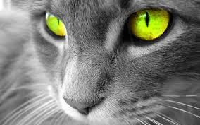

El gato doméstico (Felis silvestris catus), llamado más comúnmente gato, y de forma coloquial minino, michino, michi, micho, mizo, miz, morroño o morrongo, y algunos nombres más, es un mamífero carnívoro de la familia Felidae. Es una subespecie domesticada, por la convivencia con el ser humano, del gato montés.
